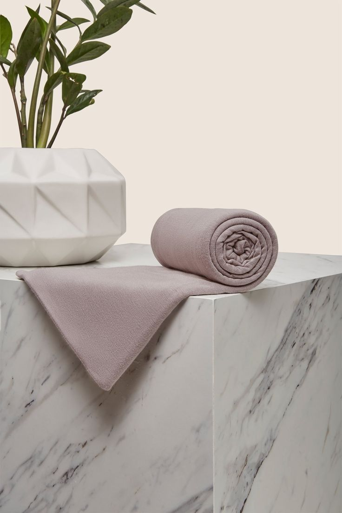

Tampil Anggun, Sentuhan Elegan
Customer Favorite
Asfi's best products that provides the best look for your styles.

Premium Scraf Floral in White
Rp 150.000

Premium Square in Ease
Rp 199.999

Premium Phasmina Polycoton in Brown
Rp 249.999
Shop By Category

PASHMINA

SQUARE

SCARF